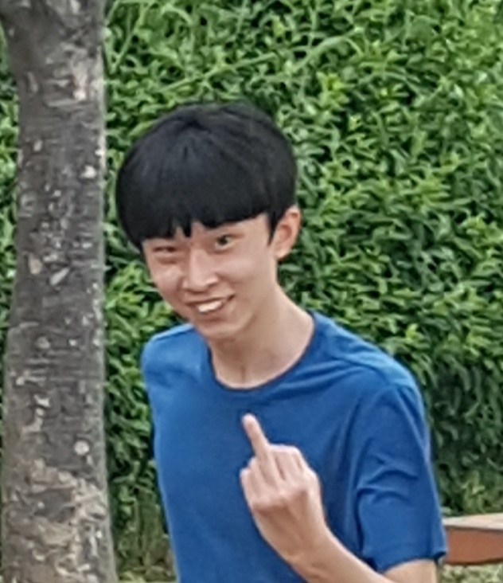

Lee Young Hoon, who is he? 이용훈, 그는 누구인가?
그는 2000년 8월 01일 생으로, 현재 24살이다. 남중,남고,공대,군대를 몸소 실현중인 대단한 사람이라 할 수 있다. 그는 현재 공군 제11전비에서 복무 중이며, 대구 방공의 수호자이다. 그의 업적을 알아보도록 하자!
우선 가장 위대한 업적이라 할 수 있는것은 유소연 하사와의 친분이다. 이용훈은 부대에 예쁜 간부가 있다는 소문을 들은 후 바로 작전에 돌입하였다. 여러 단계를 걸쳐, 그는 부대에서 유소연 하사와 술을 마시며 반말을 하는 경지에 이르게 되었다.